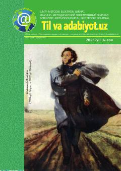

TVO'zbek tili va adabiyoti ta'limiga bag'ishlangan ilmiy-metodik jurnal.
Mazkur ilmiy-metodik elektron jurnalda o'zbek tili va adabiyoti fanlarini o'qitishning dolzarb masalalari, zamonaviy pedagogik texnologiyalar hamda ilmiy maqolalar o'rin olgan. Jurnal Maktabgacha va maktab ta'limi vazirligi tomonidan nashr etilib, ta'lim sifatini oshirishga qaratilgan.